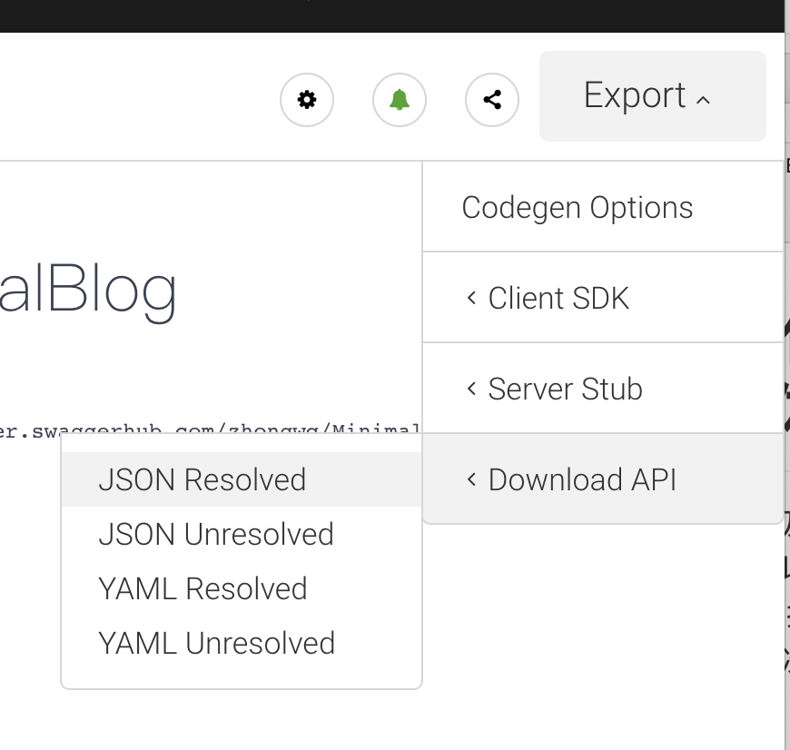
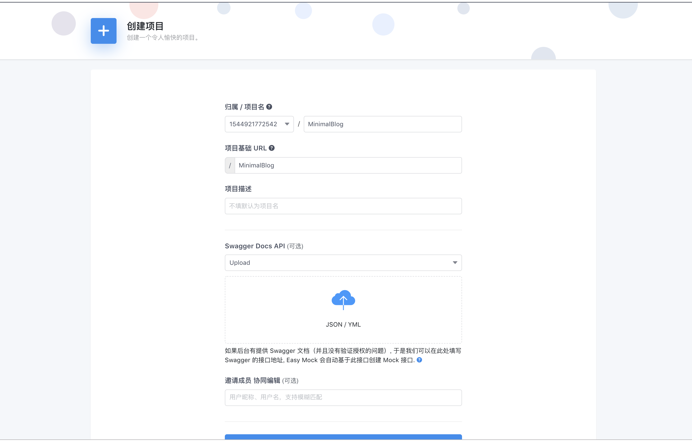
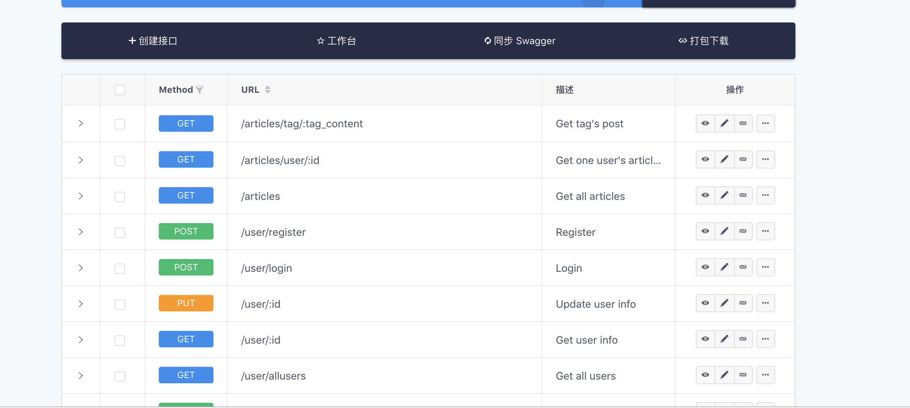
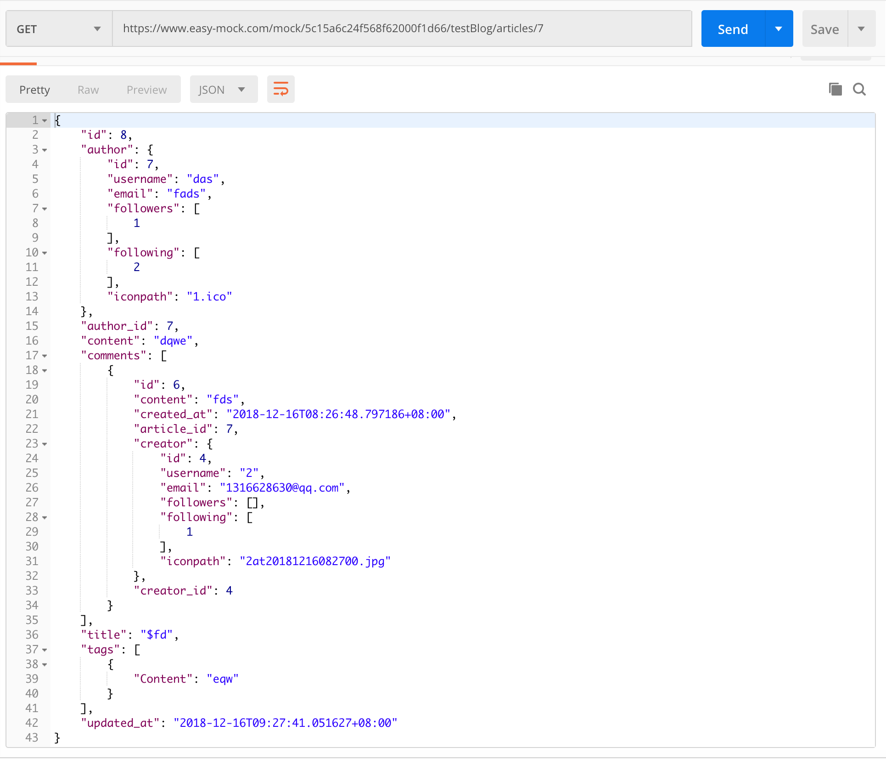

Go-Blog项目体会-使用MOCK服务开发初体验
本次项目中，我第一次使用到了swagger以及mock服务，协作前后端进行分离开发，体会到了swagger以及mock的强大之处，我们首先一起设计了后端应该提供的接口，并完成swagger文档，然后我们就可以开始我们这次博客的重点了，使用MOCK协助分离开发。
首先，我们在swaggerhub中, Export 我们的写好的接口文档，其会自动生成一个swagger.json文件供我们使用。

得到了这个json文件，我们就可以选择一个我们喜欢的mock服务，对接口的数据进行模拟，这里我选择的是Easy Mock
注册成功之后，我们点击右下角的+,进入添加项目页面  填好基本信息之后，把json拖进对应的地方
点击创建，我们的项目就创建完成了
点击进入新建的项目，我们就可以看到生成的接口了，如果部分接口的返回内容在swagger中不方便书写，我们还可以通过点击操作的第二个按钮，更深度定义返回的数据

我们选取一项进行举例
我们选择GET /user/:id进行举例
通过点击右边操作第三个按钮，我们就可以复制对应的接口地址
我们使用postman进行查看请求返回的结果

有了这么一个东西之后，对于一些简单的需求，我们前端和后端就一进行分离的并行开发了
通过这么个mock服务，可以让前端攻城师独立于后端进行开发并通过随机数据,模拟各种场景。体验还是 很不错的。